2.3. Elemental functions#
Here is the link to the official Sympy documentation on elementary functions: https://docs.sympy.org/latest/modules/functions/elementary.html
2.3.1. Absolute value function#
This function is defined by
import sympy as sp
x = sp.symbols('x', real=True)
p = sp.plot(sp.Abs(x), (x, -3, 3), show=False)
p[0].line_color='r'
p.xlabel='x'
p.ylabel='y'
p.legend=True
p.show()
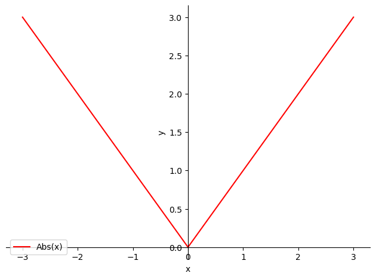
Let us look at the main properties of this function:
Property
Let \(x,y\in\mathbb{R}\). The following hold:
\(|x|\geq 0\), \(\forall x\in\mathbb{R}\). Moreover, \(|x|=0\Longleftrightarrow x=0\),
\(-|x|\leq x\leq |x|\),
\(|x|\leq y\Longleftrightarrow -y\leq x\leq y\),
\(|x+y|\leq |x|+|y|\) (triangle inequality),
\(|x-y|\geq \left| |x|-|y|\right|\),
\(|xy|=|x||y|,\quad\) \(\displaystyle\left|\frac{x}{y}\right|=\frac{|x|}{|y|}\).
Let us emphasize that absolute value measures the distance between two points on the real line. It is enough to take the absolute value of their difference. We include this as a definition.
Definition (Distance between two points)
Let \(x\), \(y\in\mathbb{R}\). We define the distance between these two points as
Let us look at an exercise involving absolute value. Before starting, it is worth remembering that whenever we face an absolute value we should separate the different cases according to the sign (positive or negative) of the inside of the absolute value.
2.3.1.1. Exercises:#
First exercise: Find the points \(x\in\mathbb{R}\) such that \(|x-2|<1\).
Solution:
We split into two cases.
First case: \(x-2>0\Longleftrightarrow x>2\).
In this case \(|x-2|=x-2\). Then,
\[ |x-2|<1\Longleftrightarrow x-2<1\Longleftrightarrow x<3. \]Combining the two conditions (\(x>2\) and \(x<3\)) gives \(x\in(2,3)\).
Second case: \(x-2\leq 0\Longleftrightarrow x\leq 2\).
In this case \(|x-2|=2-x\) and, therefore,
\[ |x-2|<1\Longleftrightarrow 2-x<1\Longleftrightarrow x>1. \]That is, \(x\in(1,2]\).
Combining the two cases, we obtain that \(|x-2|<1\Longleftrightarrow x\in(1,3)\), as we can represent graphically:
p = sp.plot(sp.Abs(x-2), 1, (x, -1, 4), show=False)
p[0].line_color='r'
p[1].line_color='b'
p.xlabel='x'
p.ylabel='y'
p.legend=True
p.show()
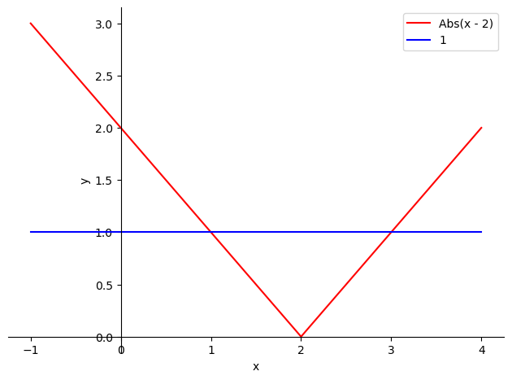
Second exercise:
Find the points \(x\in\mathbb{R}\) such that \(|x-2|=|5x+1|\).
We split into 4 cases.
\(x-2\geq 0\) (that is, \(x\geq 2\)) and \(5x+1\geq 0\) (that is, \(x\geq-\frac{1}{5}\)). Combining the two expressions, this case reduces to \(x\geq 2\). The proposed equality becomes
\[ |x-2|=|5x+1|\Longleftrightarrow x-2=5x+1\Longleftrightarrow x=-\frac{3}{4}\not\geq 2. \]Therefore, in this case the equality is impossible.
\(x-2<0\) (that is, \(x<2\)) and \(5x+1\geq 0\) (that is, \(x\geq-\frac{1}{5}\)). Combining the two expressions, this case reduces to \(x\in[-\frac{1}{5},2)\). The proposed equality becomes
\[ |x-2|=|5x+1|\Longleftrightarrow 2-x=5x+1\Longleftrightarrow x=\frac{1}{6}. \]Since \(\frac{1}{6}\in[-\frac{1}{5},2)\), we already have one solution to our equation.
\(x-2\geq 0\) (that is, \(x\geq 2\)) and \(5x+1<0\) (that is, \(x<-\frac{1}{5}\)). Combining the two expressions, we observe that they are incompatible.
\(x-2<0\) (that is, \(x<2\)) and \(5x+1< 0\) (that is, \(x<-\frac{1}{5}\)). Combining the two expressions, this case reduces to \(x<-\frac{1}{5}\). The proposed equality becomes
\[ |x-2|=|5x+1|\Longleftrightarrow 2-x=-5x-1\Longleftrightarrow x=-\frac{3}{4}. \]Since \(-\frac{3}{4}<-\frac{1}{5}\), we have found the second (and last) solution to our equation.
p = sp.plot(sp.Abs(x-2), sp.Abs(5*x+1), (x, -1, 3), show=False)
p[0].line_color='r'
p[1].line_color='b'
p.xlabel='x'
p.ylabel='y'
p.legend=True
p.show()
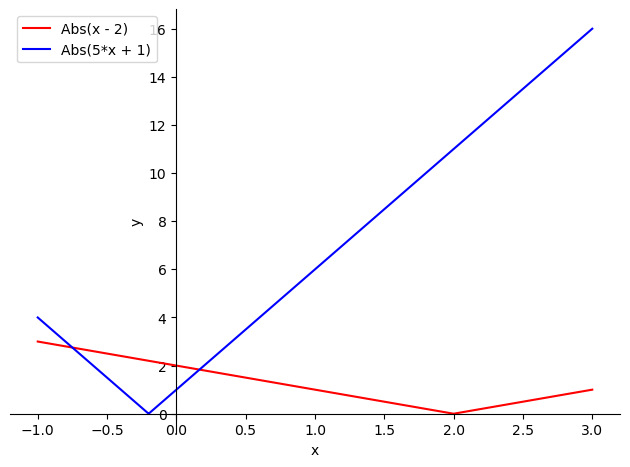
2.3.2. Polynomial functions#
These are functions of the form
with \(a_0\), \(a_1\), …, \(a_n\in\mathbb{R}\), and \(a_n\not=0\). We will say that the degree of the polynomial is \(n\) and that its leading coefficient is \(a_n\).
Examples of polynomials are
\(p_1(x)=5x^3-4x+2\),
\(\displaystyle p_2(x)=8x^3-\sqrt{2}\),
\(p_3(x)=\pi x^4+2x^3-3x\).
The domain of a polynomial function is always \(\mathbb{R}\), while its image varies from case to case.
2.3.3. Rational functions#
These are quotients of polynomial functions, that is,
Examples of rational functions are
\(\displaystyle f_1(x)=\frac{5x^3-4x+2}{8x^3-\sqrt{2}}\),
\(\displaystyle f_2(x)=\frac{1}{x^3+2}\).
The domain of these functions consists of all real numbers except those that make the denominator zero,
while their image varies from case to case.
2.3.4. Exponential function#
Definition (Exponential function)
Let \(a>0\). We define the exponential function with base \(a\) as
A special case (and not a very interesting one) is when \(a=1\). In that case \(f(x)=1^x\) is the constant function equal to \(1\).
When \(a\not=1\), the behavior varies depending on whether \(a\) is greater than or less than \(1\). In both cases, \(\mathrm{Dom}\, f=\mathbb{R}\), \(\mathrm{Im}\, f=(0,+\infty)\), and \(f(0)=a^0=1\). What changes is
\(\boldsymbol{a<1}\). In this case,
\(f(x)=a^x\) is a strictly decreasing function, \( x<y\Rightarrow a^x>a^y\),
\(\displaystyle\lim_{x\to-\infty}a^x=+\infty\),
\(\displaystyle\lim_{x\to+\infty}a^x=0\).
\(\boldsymbol{a>1}\). In this case,
\(f(x)=a^x\) is a strictly increasing function, \(x<y\Rightarrow f(x)<f(y)\),
\(\displaystyle\lim_{x\to-\infty}a^x=0\),
\(\displaystyle\lim_{x\to+\infty}a^y=+\infty\).
These functions are useful, among many other things, for measuring the growth of a population or the decay of a radioactive compound.
The most important case is the function \(f(x)=e^x\) (recall that \(e=2.7182818...\)). This is the function usually known, by default, as the exponential function.
In fact, in Sympy, sp.exp refers to the exponential function with base \(e\). If we want to work with another function in this family, we must write a**x.
The property that makes the function \(f(x)=e^x\) so interesting is that its derivative at the origin is exactly \(1\), which simplifies many computations (for example, as we will see later, Taylor expansions). Observe that the derivative of \(2^{x}\) at \(0\) is approximately \(0.7\), whereas the derivative of \(3^{x}\) at \(0\) is approximately \(1.1\), so \(e\) must lie between \(2\) and \(3\).
As a curiosity, Euler gave the number \(e\) its name. He said it came from the fact that the word exponential starts with \(e\)… a property shared by his surname.
Some general properties of the exponential function that are essential to remember and know how to apply correctly are
Property (Arithmetic properties of the exponential)
\(a^{x+y}=a^x a^y,\qquad\forall x,y\in\mathbb{R}\),
\(\left(a^x\right)^y=a^{xy},\qquad\forall x,y\in\mathbb{R}\),
\(\displaystyle a^{-x}=\frac{1}{a^x}\qquad\forall x\in\mathbb{R}\) (a consequence of the previous property).
p = sp.plot(sp.exp(x), 2**x, 0.5**x, (x, -3, 3), show=False)
p[0].line_color='r'
p[1].line_color='b'
p[2].line_color='g'
p.xlabel='x'
p.ylabel='y'
p.legend=True
p.show()
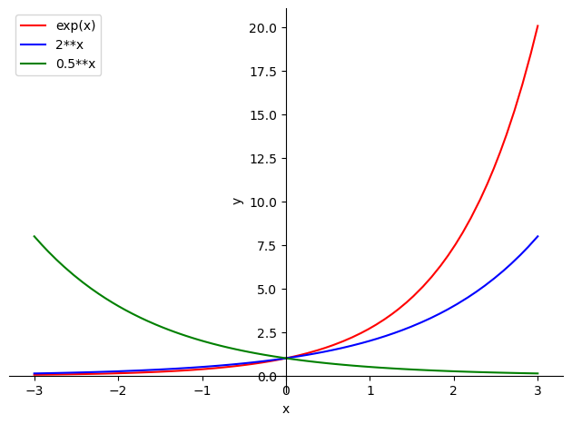
2.3.5. Logarithmic function#
Definition (Logarithmic function)
Given \(a>0\), \(a\not=1\), we say that \(y\) is the base-\(a\) logarithm of \(x\) if \(a^y=x\),
The function \(\log_a\) is the inverse function of the exponential with base \(a\).
Precisely because we have defined the logarithm as the inverse function of the exponential, we can immediately check that, for any value of \(a>0\), \(a\not=1\),
\(\mathrm{Dom}(\log_a) \, =\, (0,+\infty)\),
\(\mathrm{Im}(\log_a) \, = \, \mathbb{R}\),
\(\log_a(1)=0\).
Property (Arithmetic properties of logarithms)
\(\log_{a}(xy)=\log_{a}(x)+\log_{a}(y),\qquad\forall x,y>0\),
\(\log_{a}\left(x^y\right)=y\log_{a}(x),\qquad\forall x>0,\quad\forall y\in\mathbb{R}\),
\(\log_{a}\left(\frac{x}{y}\right)=\log_{a}(x)-\log_{a}(y) \qquad\forall x,y>0\).
For the logarithm, as with the exponential, we must distinguish two cases depending on whether the base \(a\) is less than or greater than \(1\):
\(a\in(0,1)\). In this case the logarithm is strictly decreasing. Moreover,
a. \(\displaystyle\lim_{x\to 0^{+}}\log_a(x)=+\infty\),
b. \(\displaystyle\lim_{x\to+\infty}\log_a(x)=-\infty\).
\(a > 1\). In this case the logarithm is strictly increasing. We have
a. \(\displaystyle\lim_{x\to 0^{+}}\log_a(x)=-\infty\),
b. \(\displaystyle\lim_{x\to+\infty}\log_a(x)=+\infty\).
We should emphasize that this second case is by far the most important in practice because it includes the most important logarithmic function: the natural logarithm, also called the Napierian logarithm, which has the number \(e\) as its base (Napier’s number; if you are curious, you can learn more about this mathematician here: https://es.wikipedia.org/wiki/John_Napier).
By (almost) universal convention (and regardless of what you may have been told in secondary school), we will always take \(\log\) to refer to the natural logarithm, that is: \(\log(x)=\ln(x)=\log_{e}(x)\). If we want to write a logarithm with a different base (including base 10), we will write it explicitly.
Notice, for example, the syntax in SymPy: sp.log(x) is the natural logarithm. If we want the logarithm in another base, we must specify it afterward: sp.log(x,10), for example.
p = sp.plot(sp.log(x), sp.log(x,10), sp.log(x,sp.S(1)/sp.S(2)), (x, 0.001, 3), show=False)
p[0].line_color='r'
p[1].line_color='b'
p[2].line_color='g'
p.xlabel='x'
p.ylabel='y'
p.legend=True
p.show()
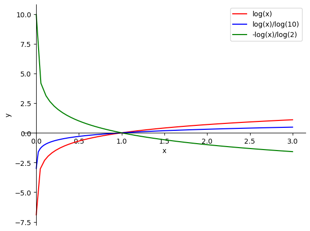
2.3.6. Trigonometric functions#
Definition (Sine function)
The function \(f(x)=\sin(x)\) satisfies
its domain is all of \(\mathbb{R}\),
its image is \([-1,1]\),
it is an odd function,
it is a periodic function with period \(2\pi\).
Definition (Cosine function)
The function \(f(x)=\cos(x)\) satisfies
its domain is all of \(\mathbb{R}\),
its image is \([-1,1]\),
it is an even function,
it is a periodic function with period \(2\pi\).
Both this function and its sister, the cosine function, are widely used to represent oscillatory motion, waves, alternating current intensities, etc.
A = 2*sp.pi
p = sp.plot(sp.sin(x), sp.cos(x), (x, -A, A), show=False)
p[0].line_color='r'
p[1].line_color='b'
p.xlabel='x'
p.ylabel='y'
p.legend=True
p.show()
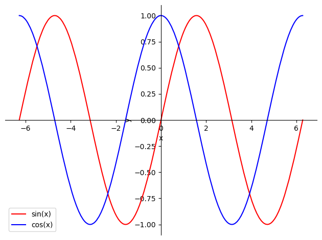
If we consider the circle of radius \(1\), and think of the angle (in radians, of course) that a radius makes with the axis \(OX\), the cosine is, graphically, the length of its projection onto this axis, while the sine is the length of its projection onto the axis \(OY\), as shown in the following figure:
{kind=link}
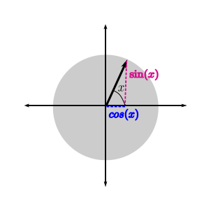
A great deal of information about sine and cosine can be extracted from this image, for example:
\(\sin(-x) = -\sin(x)\),
\(\cos(-x) = \cos(x)\),
\(\sin\left(x+\frac{\pi}{2}\right) = \cos(x)\),…
From these, we are going to highlight three:
Property
\(\displaystyle \sin^2(x) + \cos^2(x) = 1\), \(\forall x\in\mathbb{R}\),
\(\displaystyle \sin(x+y)=\sin(x)\cos(y)+\cos(x)\sin(y)\), \(\forall x,y\in\mathbb{R}\),
\(\displaystyle \cos(x+y)=\cos(x)\cos(y)-\sin(x)\sin(y)\), \(\forall x,y\in\mathbb{R}\).
Definition (Tangent function)
We define the tangent function as \(\displaystyle \tan(x):=\frac{\sin(x)}{\cos(x)}\).
The domain of this function consists of all the points of \(\mathbb{R}\) where the cosine does not vanish, that is,
while its image is all of \(\mathbb{R}\). Moreover, it is an odd and periodic function, with period \(\pi\).
p = sp.plot(sp.tan(x), (x, -1.50, 1.50), show=False)
p[0].line_color='r'
p.xlabel='x'
p.ylabel='y'
p.legend=True
p.show()
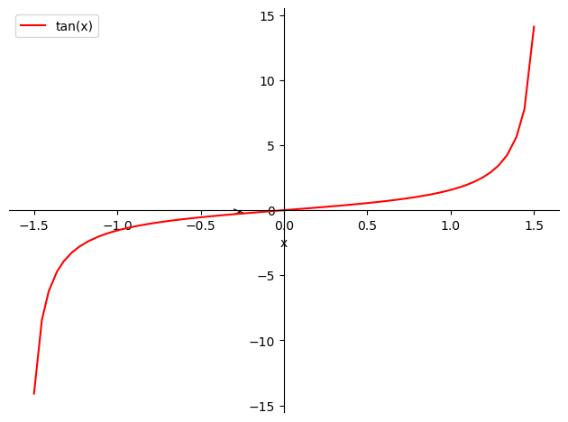
Other trigonometric functions
We include here the functions
Cosecant, \(\displaystyle\text{csc}(x):=\frac{1}{\sin(x)}\),
Secant, \(\displaystyle\sec(x):=\frac{1}{\cos(x)}\),
Cotangent, \(\displaystyle\textrm{cot}(x):=\frac{1}{\tan(x)}\).
2.3.7. Inverse trigonometric functions#
Definition (Arcsine function)
It is the inverse of the sine function. Since this is not an injective function, we restrict its domain, keeping only the sine defined on the interval \([-\frac{\pi}{2},\frac{\pi}{2}]\).
We then define the arcsine function, \(\text{arcsin}(x)\), as the function that, given an \(x\in[-1,1]\), assigns to it the unique \(y\) in \([-\frac{\pi}{2},\frac{\pi}{2}]\) such that \(x=\sin(y)\), as shown in the following figure:
{kind=link}
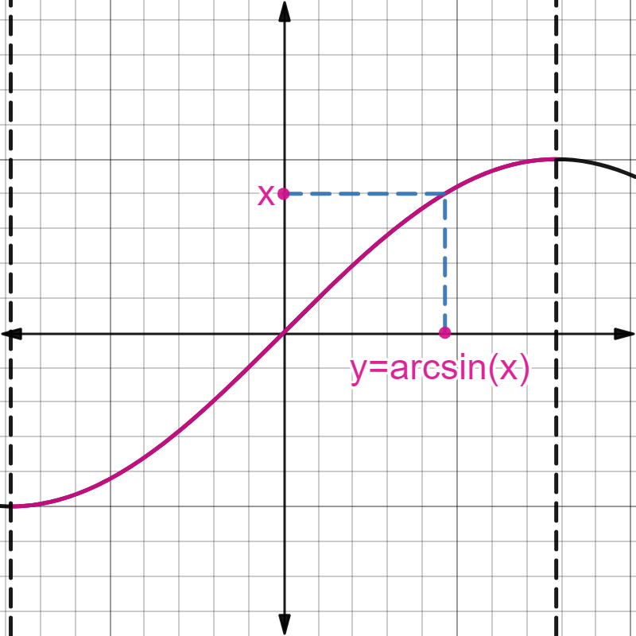
Therefore the function \(\text{arcsin}(x)\) has domain the interval \([-1,1]\) and image the interval \([-\frac{\pi}{2},\frac{\pi}{2}]\). It is an odd function.
p = sp.plot(sp.asin(x), (x, -1.0, 1.0), show=False)
p[0].line_color='r'
p.xlabel='x'
p.ylabel='y'
p.legend=True
p.show()
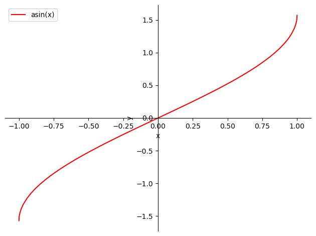
Definition (Arccosine function)
It is the inverse of the cosine function. In this case, we restrict the domain so that the cosine is defined on the interval \([0,\pi]\).
We then define the arccosine function, \(\text{arccos}(x)\), as the function that, given an \(x\in[-1,1]\), assigns to it the unique \(y\) in \([0,\pi]\) such that \(x=\cos(y)\).
{kind=link}
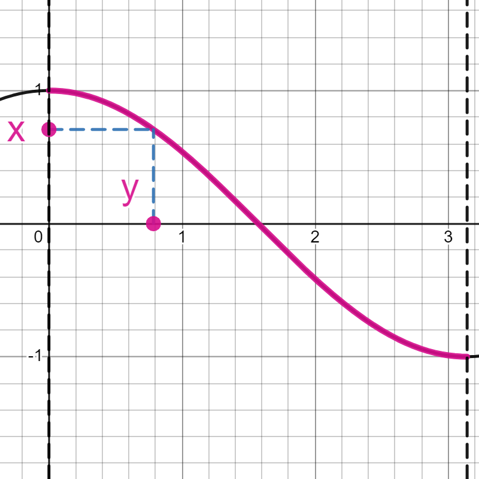
Therefore the function \(\text{arccos}(x)\) has domain the interval \([-1,1]\) and image the interval \([0,\pi]\). It has no symmetries (neither even nor odd).
p = sp.plot(sp.acos(x), (x, -1.0, 1.0), show=False)
p[0].line_color='r'
p.xlabel='x'
p.ylabel='y'
p.legend=True
p.show()
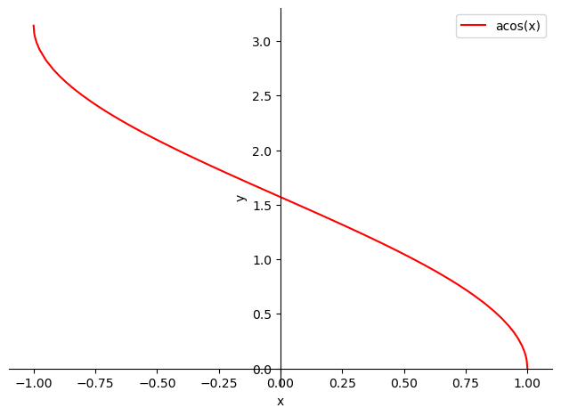
Definition (Arctangent function)
It is the inverse of the tangent function. We restrict its domain to the interval \(\left(-\frac{\pi}{2},\frac{\pi}{2}\right)\).
We then define the arctangent function, \(\text{arctan}(x)\), as the function that, given an \(x\in\mathbb{R}\), assigns to it the unique \(y\) in \(\left(-\frac{\pi}{2},\frac{\pi}{2}\right)\) such that \(x=\tan(y)\).
{kind=link}
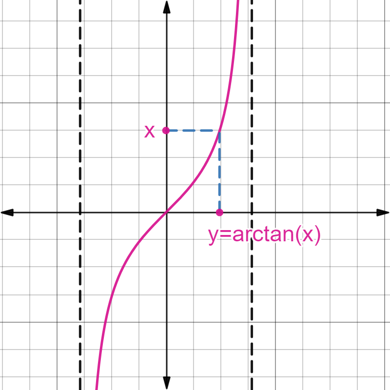
Therefore the function \(\text{arctan}(x)\) has domain all of \(\mathbb{R}\) and image the interval \(\left(-\frac{\pi}{2},\frac{\pi}{2}\right)\). It is an odd function.
p = sp.plot(sp.atan(x), (x, -10.0, 10.0), show=False)
p[0].line_color='r'
p.xlabel='x'
p.ylabel='y'
p.legend=True
p.show()
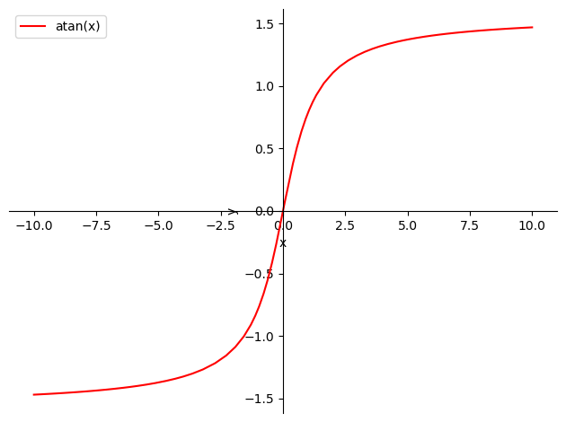